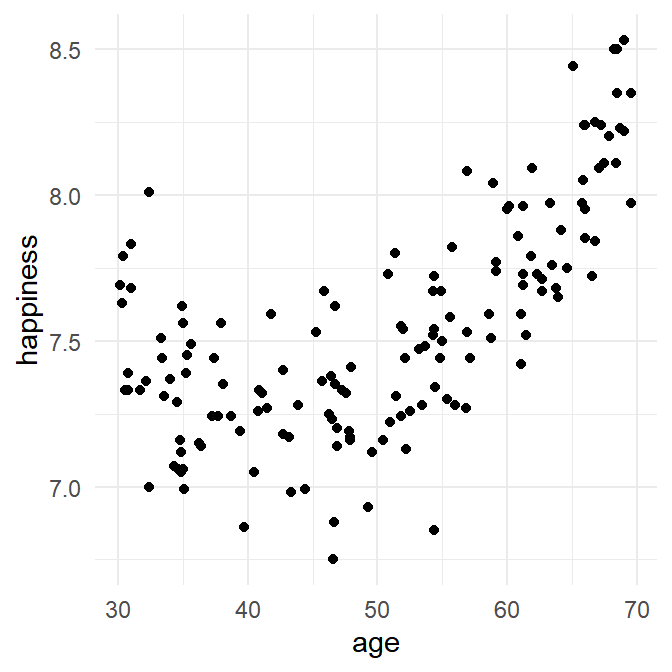

Identifying polynomial components
To determine whether a model should have quadratic, cubic, or higher order components, we can use the sequential regression approach covered in the previous session. We take the following steps, and look at the change in \(R^2\) associated with each step.
First fit the linear model
then test for the addition of the quadratic (\(x^2\)) component
then test for the addition of the cubic (\(x^3\)) component
Let’s see this in action!
Learning tip
Try storing all your code in an R Markdown file today if you are not doing so already! You can use code chunks and write text to describe each chunk as was described in the slides.
We’ll use a dataset inspired by a 2016 survey of the National Office for Statistics. They investigated happiness across the life span. Approximately 300,000 individuals of all ages answered questions related to well-being.
Each participant answered the following question regarding their happiness:
"Overall, how happy did you feel yesterday?
Where 0 is ‘not at all happy’ and 10 is ‘completely happy’."
This happy dataset are located at “https://bit.ly/2uIxM5K”.
Let’s load the data into R, and preview the data using head:
# load the data
SurveyData <- read_csv("https://bit.ly/2uIxM5K")
# preview it
SurveyData %>% head()
> # A tibble: 6 x 3
> age happiness anxiety
> <dbl> <dbl> <dbl>
> 1 66.0 7.85 2.33
> 2 35.0 7.56 2.58
> 3 58.6 7.59 3.43
> 4 35.0 7.06 1.67
> 5 60.2 7.96 2.13
> 6 67.5 8.11 1.09
Plot the relationship between age and happiness:
SurveyData %>%
ggplot(aes(x=age, y=happiness)) +
geom_point() 
If you had to guess from the plot, which components seem to be present in the relationship between happiness and age?
Linear:
Quadratic:
Cubic:
Try to describe the relationship between happiness and age.
Happiness of individuals appears to decline from 30 years to the late forties. Happiness then increases beyond the late forties, reaching its peak at 70 years, at which age people reported the highest levels of happiness - higher even than levels shown in early thirties.
Linear component
To determine whether there is a linear component, run a simple regression with happiness as the outcome variable and age as the predictor:
polynomial1 <- lm(happiness ~ age, data = SurveyData)
summary(polynomial1)
>
> Call:
> lm(formula = happiness ~ age, data = SurveyData)
>
> Residuals:
> Min 1Q Median 3Q Max
> -0.78019 -0.16858 -0.04762 0.19811 0.84368
>
> Coefficients:
> Estimate Std. Error t value Pr(>|t|)
> (Intercept) 6.484101 0.102340 63.36 <2e-16 ***
> age 0.021076 0.001979 10.65 <2e-16 ***
> ---
> Signif. codes: 0 '***' 0.001 '**' 0.01 '*' 0.05 '.' 0.1 ' ' 1
>
> Residual standard error: 0.2912 on 148 degrees of freedom
> Multiple R-squared: 0.4339, Adjusted R-squared: 0.4301
> F-statistic: 113.5 on 1 and 148 DF, p-value: < 2.2e-16Explanation: The linear model is stored in polynomial1. summary displays the results.
What percentage of the variance in happiness scores is explained by age? %
Is age a statistically significant predictor of happiness
The linear model does okay, but remember it is only fitting a straight line through our data, which appear to show a curved relationship!
Adding a quadratic component
We can add a quadratic component to the regression model using poly(). If we type poly(age, 2) when specifying the model, the ‘2’ in the poly() function tells R that we want to fit a model with both linear and quadratic components of age. This is the model it’ll fit:
\(predicted \: happiness = a + b_1(age) + b_2(age^2)\)
where \(a\) is the intercept, and \(b_1\) and \(b_2\) are the coefficients for the linear and quadratic components, respectively.
polynomial2 <- lm(happiness ~ poly(age,2), data = SurveyData)
summary(polynomial2)
>
> Call:
> lm(formula = happiness ~ poly(age, 2), data = SurveyData)
>
> Residuals:
> Min 1Q Median 3Q Max
> -0.58896 -0.12752 -0.02333 0.13274 0.59724
>
> Coefficients:
> Estimate Std. Error t value Pr(>|t|)
> (Intercept) 7.54433 0.01779 424.06 <2e-16 ***
> poly(age, 2)1 3.10223 0.21789 14.24 <2e-16 ***
> poly(age, 2)2 2.36118 0.21789 10.84 <2e-16 ***
> ---
> Signif. codes: 0 '***' 0.001 '**' 0.01 '*' 0.05 '.' 0.1 ' ' 1
>
> Residual standard error: 0.2179 on 147 degrees of freedom
> Multiple R-squared: 0.6853, Adjusted R-squared: 0.681
> F-statistic: 160.1 on 2 and 147 DF, p-value: < 2.2e-16Explanation of the code: We’ve told R we want to add a quadratic component to the model by using happiness ~ poly(age, 2).
Explanation of the output: You will see in the output separate coefficient estimates for poly(age, 2)1 and poly(age, 2). These are the estimates of the coefficients for the linear and quadratic components of age (i.e., \(b_1\) and \(b_2\) in the equation above).
What percentage of the variance in happiness does a model with a quadratic component of age explain? %
Compare the value of \(R^2\) in polynomial1 and polynomial2.
Does the addition of a quadratic component result in a numerical increase in \(R^2\) in
polynomial2?What is the change in \(R^2\)? % (to 2 decimal places)
\(R^2\) change from polynomial1 to polynomial2 = 68.53 - 43.39 = 25.14%
Therefore, the model with the quadratic component of age accounts for 25.14% more variance in happiness than the model with only a linear component.
We can test whether the increase in R2 in polynomial2 represents a statistically significant increase by comparing polynomial1 and polynomial2 using anova:
anova(polynomial1, polynomial2)
> Analysis of Variance Table
>
> Model 1: happiness ~ age
> Model 2: happiness ~ poly(age, 2)
> Res.Df RSS Df Sum of Sq F Pr(>F)
> 1 148 12.5542
> 2 147 6.9791 1 5.5752 117.43 < 2.2e-16 ***
> ---
> Signif. codes: 0 '***' 0.001 '**' 0.01 '*' 0.05 '.' 0.1 ' ' 1Is the increase in \(R^2\) associated with the addition of the quadratic component statistically significant?
Yes. We can report the improvement in fit as follows:
A model with a quadratic component of age accounted for a statistically significantly greater proportion of variance in happiness than a model with only a linear component, F(1, 147) = 117.43, p < .001.
Adding a cubic component
Now we’ll test for a cubic component.
polynomial3 <- lm(happiness ~ poly(age,3), data = SurveyData)
summary(polynomial3)
>
> Call:
> lm(formula = happiness ~ poly(age, 3), data = SurveyData)
>
> Residuals:
> Min 1Q Median 3Q Max
> -0.60468 -0.14165 -0.01844 0.13839 0.58176
>
> Coefficients:
> Estimate Std. Error t value Pr(>|t|)
> (Intercept) 7.54433 0.01777 424.447 <2e-16 ***
> poly(age, 3)1 3.10223 0.21769 14.251 <2e-16 ***
> poly(age, 3)2 2.36118 0.21769 10.846 <2e-16 ***
> poly(age, 3)3 -0.24530 0.21769 -1.127 0.262
> ---
> Signif. codes: 0 '***' 0.001 '**' 0.01 '*' 0.05 '.' 0.1 ' ' 1
>
> Residual standard error: 0.2177 on 146 degrees of freedom
> Multiple R-squared: 0.688, Adjusted R-squared: 0.6816
> F-statistic: 107.3 on 3 and 146 DF, p-value: < 2.2e-16The ‘3’ in poly(age,3) tells R that we want to specify a model with linear, quadratic and cubic components, of the form:
\(happiness = a + b_1(age) + b_2(age^2) + b_3(age^3)\)
What percentage of the variance in happiness does a model with a cubic component of age explain? %
Compare the value of \(R^2\) in polynomial3 and polynomial2.
Does the addition of a cubic component result in a numerical increase in \(R^2\) in
polynomial3?What is the increase in \(R^2\) as a result of adding in the cubic component? (Compare \(R^2\) between
The increase in \(R^2\) is %polynomial3andpolynomial2).
To determine if the increase in \(R^2\) is statistically significant, we can again use anova:
anova(polynomial2, polynomial3)
> Analysis of Variance Table
>
> Model 1: happiness ~ poly(age, 2)
> Model 2: happiness ~ poly(age, 3)
> Res.Df RSS Df Sum of Sq F Pr(>F)
> 1 147 6.9791
> 2 146 6.9189 1 0.060171 1.2697 0.2617Is the increase in \(R^2\) associated with the addition of a cubic component statistically significant?
The anova comparing polynomial3 and polynomial2 is not statistically significant, F(1, 146) = 1.27, p = .26, indicating that the addition of the cubic component of age into the regression model does not increase the variance in happiness explained.
On the basis of the tests conducted so far, which model should be preferred? One with:
Our analyses suggest that a model with a quadratic component of age (i.e., the model in polynomial2) is sufficient to explain the data.
A note about poly()
poly automatically creates polynomial terms for us. The polynomials it creates are actually a special type, called orthogonal polynomials. This means that the polynomials are not correlated with one another. For example, the correlation between the \(age\) and \(age^2\) components created by poly is zero . Likewise, the correlation betweem \(age^2\) and \(age^3\) components created by poly is also zero.
This is desirable because if the components were not orthogonalised, they’d be highly correlated with each other. That is, the raw scores for \(age\) and \(age \times age\) are likely to be highly correlated. As we covered in the first Building Models 1 session, high correlations between our predictors is undesirable as it can lead to multicolinearity.